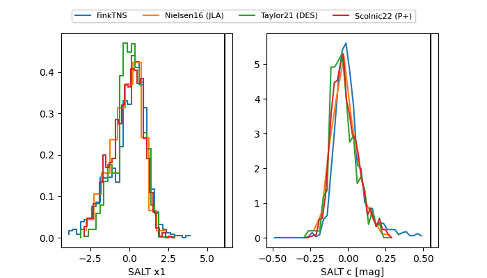

FINK: ZTF25ablihfx
Lasair: ZTF25ablihfx
ALeRCE: ZTF25ablihfx
TNS: 2025vgt
YSE: 2025vgt
ZTF25ablihfx (ztf,fink)
2025vgt (tns,yse)
ATLAS25kmf (atlas)
PS25hmj (panstarrs)
equatorial (ra, dec) = (310.3107,-25.35348)
galactic (l, b) = (19.5260,-34.47281)

last atlasc=17.53, atlaso=17.26, ztfg=17.75, ztfr=17.29
3 atlasc, 8 atlaso, 7 ztfg, 10 ztfr detections